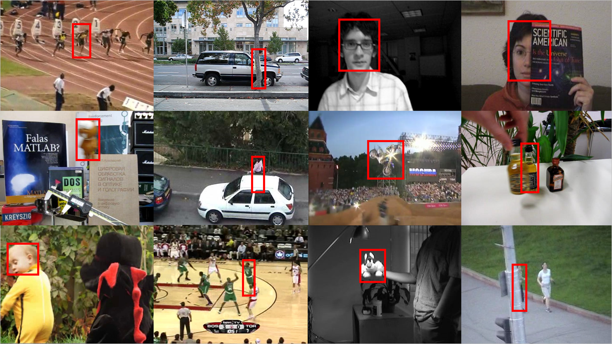
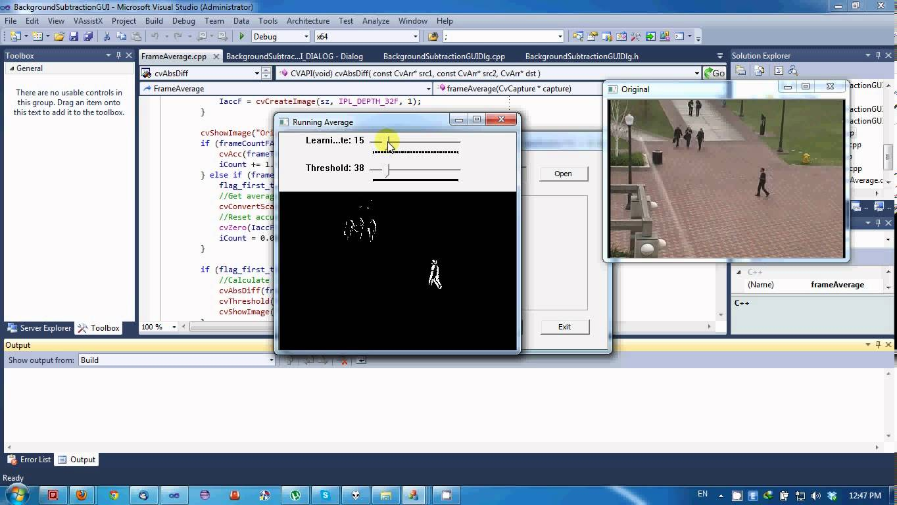
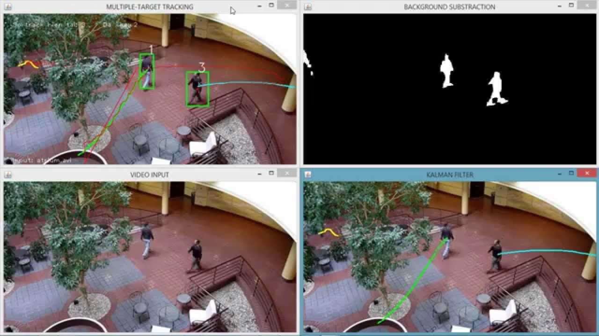
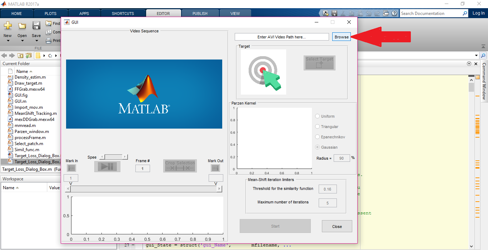
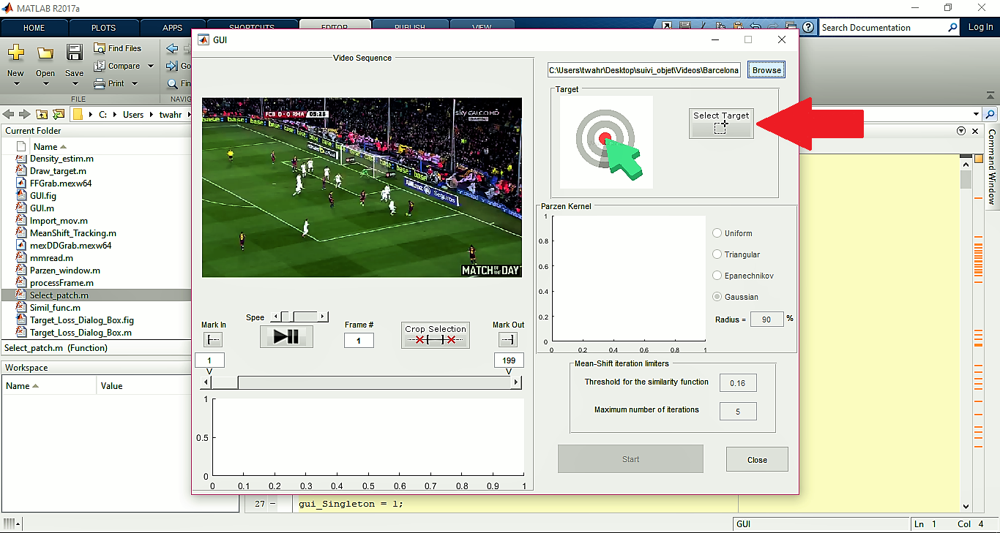
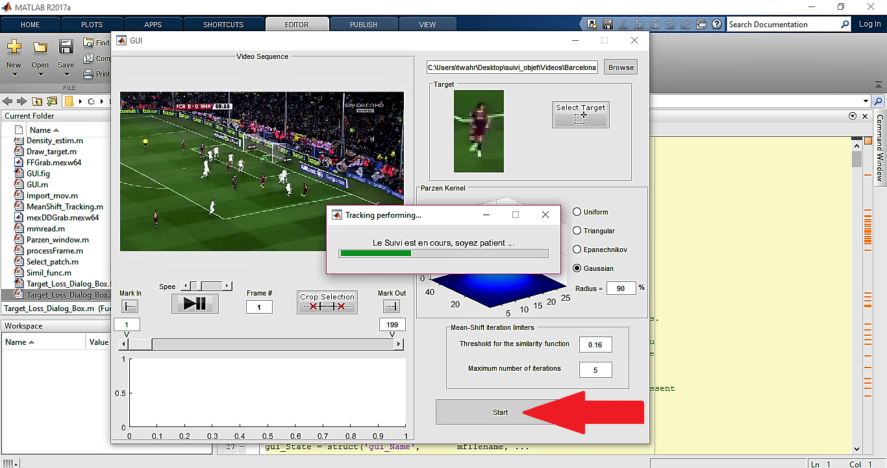
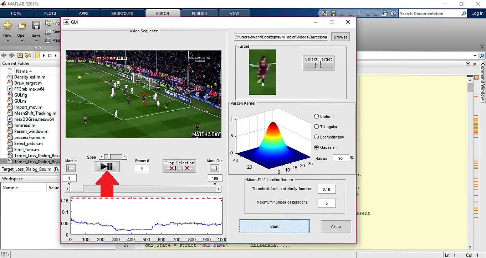
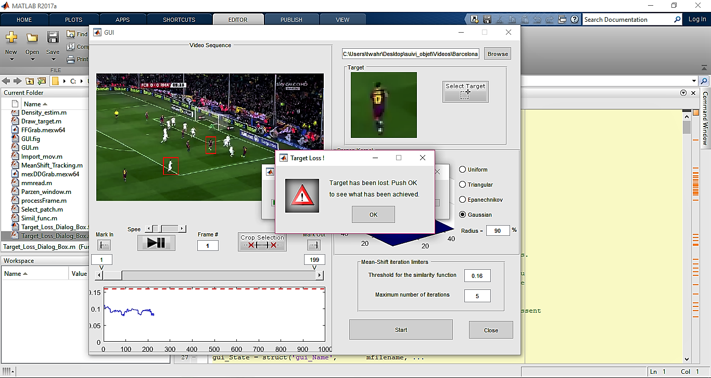
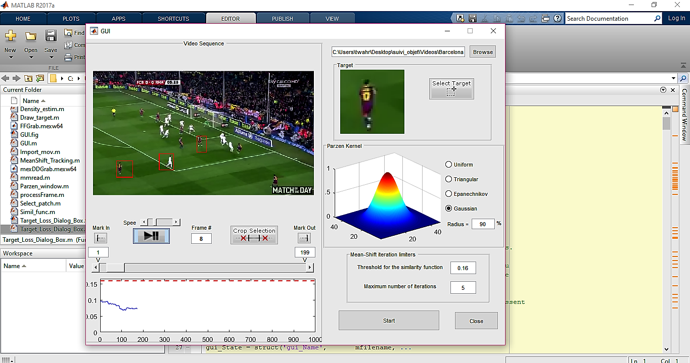

Suivi d’objet en mouvement sur une vidéo (Tracking)
MATLAB

Suivi d’objet en mouvement sur une vidéo (Tracking)
MATLAB

Suivi d’objet en mouvement sur une vidéo (Tracking)
MATLAB

Suivi d’objet en mouvement sur une vidéo (Tracking)
MATLAB
Introduction:
Le suivi des objets a reçu une attention significative depuis plusieurs années. Avec une vue d'ensemble, c'est un combinaison de traitement d'image par ordinateur, vidéo traitement d'image, reconnaissance de formes, intelligence artificiel et le contrôle des machines. Tous ces éléments sont mis en place pour détecter les objets en mouvement à partir des images obtenues et exécuter le tracking en temps réel, bien que la séquence détaillée de ces sous-opérations peuvent être différenciés pour plusieurs algorithmes.
Dans notre projet, la méthode utilisée pour le suivi des objets est l'Algorithme de Mean Shift (type de suivi du noyau).
Algorithme de Mean-shift:
Pour chaque point de données, le Mean-shift définit une fenêtre autour de lui et calcule la moyenne des points de données. Ensuite, il déplace le centre de la fenêtre vers le moyen et répète l'algorithme jusqu'à ce qu'il converge.
C'est un algorithme itératif non paramétrique ou une estimation de gradient de densité non paramétrique à l'aide d'une approche généralisée du noyau.
Ce algorithme est utilisé pour la segmentation d'image, le clustering, le suivi visuel, l'analyse de l'espace & la recherche de mode ect...
Le Mean-shift et le suivi:
L'algorithme de Mean-shift peut être utilisé pour le suivi visuel. L'algorithme le plus simple créerait une carte de confiance dans la nouvelle image en fonction de l'histogramme des couleurs de l'objet dans l'image précédente et utiliserait le changement moyen pour trouver le pic d'une carte de confiance près de l'ancienne position de l'objet. La carte de confiance est une fonction de densité de probabilité sur la nouvelle image, en attribuant à chaque pixel de la nouvelle image une probabilité, qui est la probabilité que la couleur de pixel apparaisse dans l'objet dans l'image précédente. Quelques algorithmes, tels que le suivi de l'objet basé sur le noyau, le suivi d'ensemble, CAMshift, développent cette idée.

Tapez "GUI" dans la ligne de commande. Lors de l'apparition de la GUI, entrez le chemin du video

Sélectionnez l'objet que vous souhaitez dans la vidéo. .

Cliquez sur le boutton "Start" pour traiter la vidéo.

Cliquez sur le boutton "Play_up" pour afficher le résultat.

Si l'objet est perdue au cours de la suivi, cette fenêtre apparaîtra.

On peut sélectionner plus d'un objet dans une même vidéo.